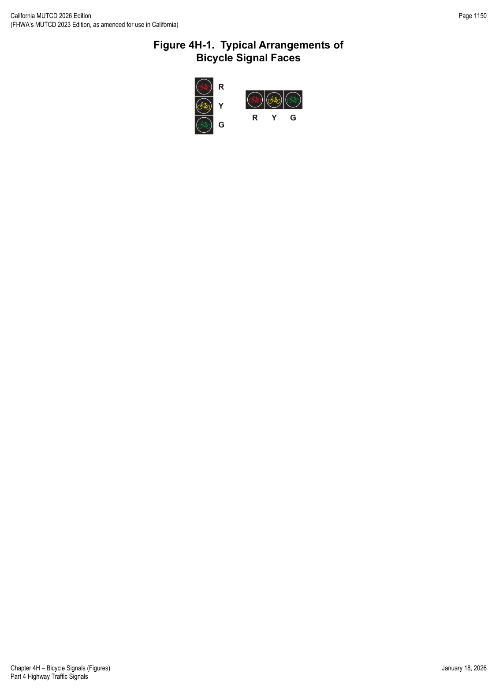
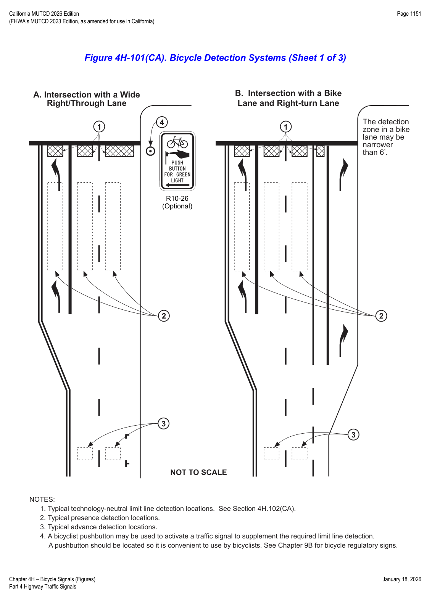
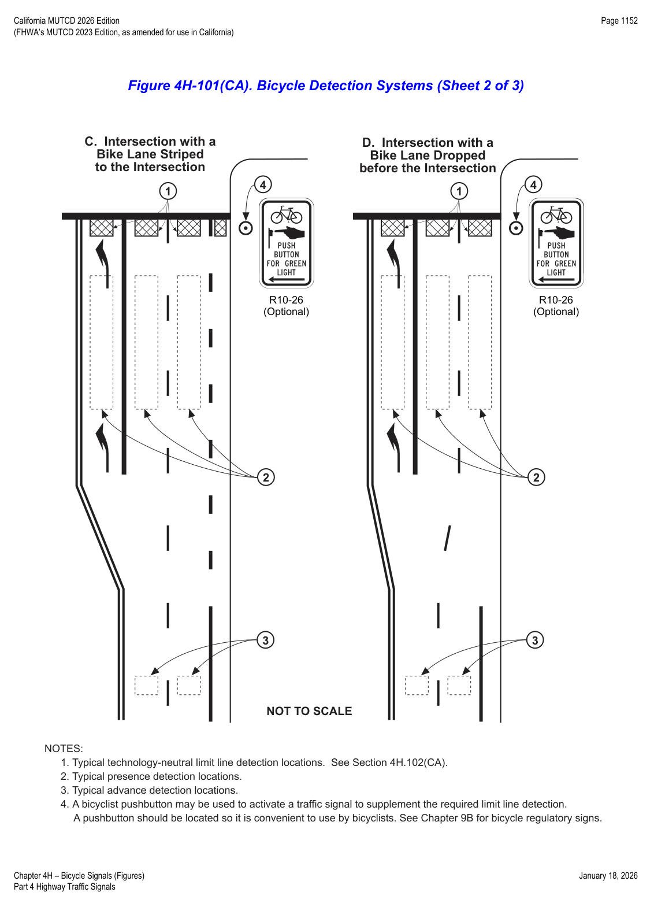
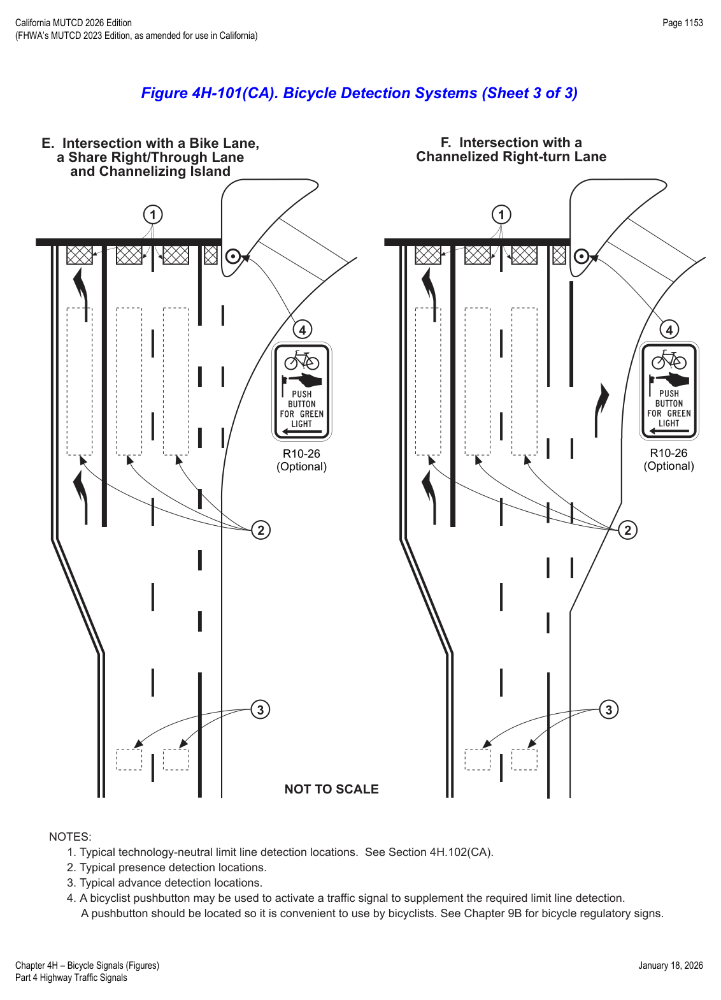

Part 4 · Highway Traffic Signals · Chapter 4H
Bicycle Signals
When and how bicycle signal faces may be used to separately control bicyclist movements, their required layout, size, placement, timing, and California-specific limit-line bicycle detection requirements.
4H.01Use of Bicycle Signal Faces
Option — Permissive
- 01A bicycle signal face may be used to provide separate control of a bicyclist movement for various situations, including: (A) to provide a protected bicycle signal phase or a leading or lagging bicycle interval; (B) to continue a through bicycle lane on the right-hand side of a mandatory right-turn lane (or the left-hand side of a mandatory left-turn lane) that would otherwise be in non-compliance with Paragraph 1 of Section 9E.02 or Paragraph 7 of Section 9E.06; (C) to provide a bicycle interval for a counter-flow bicycle facility; or (D) to provide for unusual or unexpected arrangements of the bicyclist movement through complex intersections, conflict areas, or signal control.
- 02A bicycle signal face may be used at a mid-block traffic control signal where there are no motor vehicle movements parallel to the bicycle crossing.
Support — Background/Explanatory
- 03Chapter 4C contains information on warrants for the installation of a new traffic control signal.
Guidance — Recommended Practice
- 04The decision whether to incorporate bicycle signal face(s) into a new traffic control signal design should be made during the engineering study performed in accordance with Paragraph 1 of Section 4C.01.
- 05Engineering judgment should be exercised in determining whether it would be advantageous or beneficial to install a bicycle signal face(s) at an existing traffic control signal.
Support — Background/Explanatory
- 06Retrofitting existing circular traffic signals that are operated as bicycle signal faces with bicycle symbol signal faces is analogous to retrofitting existing traffic signals with pedestrian signals, where such a determination is not required through an engineering study.
- 07For the purpose of warrant analyses, provisions for classifying bicycles are provided in Paragraph 16 of Section 4C.01 and Paragraph 2 of Section 9F.01.
Standard — Mandatory Requirement
- 08If used, a bicycle signal face shall only be used to control bicyclist movements from a designated bicycle lane or from a separate facility, such as a shared-use path.
- 09If used, a bicycle signal face shall only be used to control bicyclist movements where bicyclists moving on a GREEN BICYCLE or YELLOW BICYCLE signal indication are not in conflict with any simultaneous motor vehicle movement at the signalized location, including right (or left) turns on red.
Guidance — Recommended Practice
- 10If used where motor vehicle traffic can make the same movements as bicyclists, a bicycle signal face should only be used if the bicyclist movement it controls is sometimes allowed to proceed or sometimes required to stop at times when motor vehicle traffic making the same movement — controlled by other vehicular signal faces — is required to stop or allowed to proceed, respectively.
4H.02Prohibited Uses of Bicycle Signal Faces
Standard — Mandatory Requirement
- 01Bicycle signal faces shall not be used to control conflicting bicyclist movements from perpendicular or nearly perpendicular directions.
Support — Background/Explanatory
- 01aAs clarified by FHWA's MUTCD Team, this prohibition is intended to eliminate the "bike scramble" used in some jurisdictions, which operates similarly to a pedestrian scramble phase where all movements go simultaneously from all directions. Because bicycles can travel much faster than pedestrians, the intent is to require separate phases to keep conflicting bicycle movements from perpendicular or near-perpendicular directions apart.
Standard — Mandatory Requirement
- 02Bicycle signal faces shall not be used for controlling any bicyclist movement that is sharing an approach lane with motor vehicle traffic.
- 03Bicycle signal faces shall not be used in any manner with respect to the design and operation of a hybrid beacon.
4H.03Bicycle Signal Signs
Support — Background/Explanatory
- 01The primary purposes of the Bicycle Signal (R10-40, R10-40a, R10-41, R10-41a, R10-41b) sign (see Section 9B.22) are to inform road users that the signal indications in the bicycle signal face are intended only for bicyclists, and to inform bicyclists which specific bicyclist movements are controlled by the bicycle signal face.
Standard — Mandatory Requirement
- 02Except as provided in Paragraph 3, a Bicycle Signal (R10-40, R10-40a, R10-41, R10-41a, or R10-41b) sign shall be installed immediately adjacent to (including above or below) every bicycle signal face. The Bicycle Signal sign shall have a minimum size of 24 inches × 36 inches if placed next to an overhead-mounted bicycle signal face, and a minimum size of 12 inches × 21 inches if placed next to a post-mounted bicycle signal face.
Support — Background/Explanatory
- 02aRefer to FHWA's List of Known Errors for an error in the Paragraph 2 text. Refer to Section 1A.04 for more details.
Option — Permissive
- 03The Bicycle Signal sign may be omitted adjacent to a supplemental near-side bicycle signal face containing 4-inch indications.
4H.04Application of Bicycle Symbol Signal Indications during Steady (Stop-and-Go) Operation
Standard — Mandatory Requirement
- 01Steady bicycle symbol signal indications shall be applied as follows: (A) a steady RED BICYCLE signal indication shall be displayed when it is intended to prohibit bicyclists in a designated bicycle lane or from a separate facility such as a shared-use path from entering the intersection or other controlled area — turning after stopping is permitted as stated in Item C in Paragraph 1 of Section 4A.05; (B) a steady YELLOW BICYCLE signal indication shall be displayed following a GREEN BICYCLE signal indication in the same bicycle signal face — a YELLOW BICYCLE signal indication shall not be displayed in conjunction with the change from RED BICYCLE to GREEN BICYCLE, and the YELLOW BICYCLE indication shall be followed by a RED BICYCLE indication; (C) a steady GREEN BICYCLE signal indication shall be displayed only when it is intended to permit bicyclists in a designated bicycle lane or from a separate facility such as a shared-use path to enter the intersection, as discussed in Section 4A.05.
4H.05Application of Bicycle Symbol Signal Indications during Flashing Operation
Standard — Mandatory Requirement
- 01The mode of operation of the bicycle signal faces at a traffic control signal shall be the same as the mode of operation of the other traffic signal faces at the same signalized location. Bicycle signal faces shall operate in the steady (stop-and-go) mode when the other traffic signal faces are operating in the steady mode, and in the flashing mode when the other signal faces are operating in the flashing mode. Bicycle signal faces shall not be placed in a dark mode when other vehicular traffic signal faces are operating in the flashing mode.
Guidance — Recommended Practice
- 02When a traffic control signal is operated in the flashing mode, bicycle signal faces should display a flashing RED BICYCLE signal indication if the other vehicular signal faces on the same approach are displaying flashing red signal indications, or if there are no other vehicular signal faces on the same approach.
- 03When a traffic control signal is operated in the flashing mode, bicycle signal faces should display a flashing YELLOW BICYCLE signal indication if the other vehicular signal faces for the through lanes on the same approach are displaying flashing yellow signal indications, unless it is determined by engineering judgment that a flashing RED BICYCLE signal indication would provide a safer operation.
Support — Background/Explanatory
- 04Refer to the National MUTCD website's Frequently Asked Questions (FAQs) on Part 4 — Highway Traffic Signals, for use of the flashing yellow Bicycle Symbol Signal Indication. Refer to Section 1A.04 for more details.
4H.06Layout of Bicycle Signal Faces
Standard — Mandatory Requirement
- 01Bicycle signal faces shall consist of all bicycle symbol signal indications (see Figure 4H-1). Circular or arrow signal indications shall not be used in a bicycle signal face.
Option — Permissive
- 02Bicycle signal faces may be oriented vertically or horizontally.
Standard — Mandatory Requirement
- 03The layouts and arrangements of the bicycle signal face shall be in accordance with the following: (A) only the bicycle symbol shown on Page 6-7 in the 2004 Standard Highway Signs publication (see Section 1A.05) shall be used for bicycle symbol signal indications, proportioned to fit within the signal lens; the bicycle symbol shall only be positioned horizontally and shall face to the left; (B) the RED BICYCLE, YELLOW BICYCLE, and GREEN BICYCLE signal indications shall be in the same relative position to each other as specified for CIRCULAR RED, CIRCULAR YELLOW, and CIRCULAR GREEN, respectively, in Sections 4E.04 and 4E.05; (C) as a specific exception to Paragraph 5 of Section 4E.04, two YELLOW BICYCLE signal indications or two GREEN BICYCLE signal indications shall not be arranged horizontally adjacent to each other at right angles to the basic straight-line arrangement to form a clustered signal face.
Option — Permissive
- 04Backplates (see Paragraphs 18 and 19 in Section 4D.06) may be used with bicycle signal faces.
- 05If a bicycle signal face having 4-inch signal indications is used, the accompanying visors may be omitted.

4H.07Size of Bicycle Symbol Signal Indications
Standard — Mandatory Requirement
- 01There shall be three nominal diameter sizes for bicycle signal indications: 4 inches, 8 inches, and 12 inches.
- 02All signal indications in a bicycle signal face shall be of the same size.
- 03Four-inch signal indications shall not be used for any bicycle signal face other than a supplemental, post-mounted, near-side bicycle signal face.
4H.08Placement of Bicycle Signal Faces
Standard — Mandatory Requirement
- 01The provisions of Sections 4D.05 through 4D.08 shall apply to the placement of bicycle signal faces except as follows: (A) as a specific exception to Item A in Paragraph 1 of Section 4D.05, a minimum of one primary bicycle signal face shall be provided to control traffic for the bicyclist movement, even if a bicyclist through movement exists; (B) the primary bicycle signal face shall have either 8-inch or 12-inch signal indications, even if located at the near side of the signal-controlled location; (C) when the primary bicycle signal face is located more than 120 feet beyond the stop line, a supplemental near-side bicycle signal face shall be provided.
Guidance — Recommended Practice
- 02When the primary bicycle signal face is located more than 80 feet and up to 120 feet beyond the stop line, a supplemental near-side bicycle signal face should be provided.
- 03A bicycle signal face should be separated horizontally or vertically from the nearest vehicular traffic signal face for the same approach by at least 3 feet, measured either horizontally perpendicular to the approach between the centers of the signal faces, or vertically from the center of the lowest signal indication of the top signal face to the center of the highest signal indication of the bottom signal face. If horizontally-arranged or clustered signal faces are used, the minimum 3-foot horizontal separation should be measured from the center of the right-most signal indication in the signal face on the left to the center of the left-most signal indication in the signal face on the right.
- 04Bicycle signal faces should be placed such that visibility is maximized for bicyclists and minimized for adjacent or conflicting vehicle movements not controlled by the bicycle signal face. Consideration should be given to using visibility-limited bicycle signal faces where drivers not controlled by the bicycle signal face might be confused by viewing the bicycle signal indications, such as when the bicyclist movement is sometimes allowed to proceed or sometimes required to stop at times when motor vehicle traffic making the same movement is required to stop or allowed to proceed, respectively.
4H.09Mounting Height of Bicycle Signal Faces
Standard — Mandatory Requirement
- 01The provisions of Section 4D.09 shall apply to the mounting height of bicycle signal faces except as follows: (A) the bottom of the signal housing (including brackets) of a bicycle signal face not located over a roadway or shoulder shall be a minimum of 7 feet above the sidewalk or ground; and (B) if 4-inch signal indications are used in a supplemental, post-mounted, near-side bicycle signal face, the bottom of the signal housing (including brackets) shall be a minimum of 4 feet and a maximum of 8 feet above the sidewalk or ground. Bicycle signal faces with 4-inch signal indications installed above a pedestrian sidewalk or pathway shall not project more than 4 inches into the pedestrian facility.
4H.10Intensity and Light Distribution of Bicycle Signal Faces
Guidance — Recommended Practice
- 01Except for the 4-inch nominal lens diameter, the intensity and distribution of light from each illuminated bicycle signal face should be similar to that recommended for vehicular traffic signal faces in accordance with Paragraph 11 of Section 4E.01, to the extent practical.
4H.11Yellow Change and Red Clearance Intervals for Bicycle Signal Faces
Standard — Mandatory Requirement
- 01The provisions of Section 4F.17 shall apply to the duration of the yellow change and red clearance intervals of a bicycle signal phase.
Guidance — Recommended Practice
- 02The minimum duration of the yellow change interval of a bicycle signal phase should be 3 seconds.
Support — Background/Explanatory
- 03The function of the yellow change interval is to warn bicyclists approaching a signalized location that their permission to proceed is being terminated, after which they will be directed to stop. Providing clearance time for a bicyclist to travel through the intersection or conflict area is the purpose of the red clearance interval rather than the yellow change interval.
4H.12Bicycle Push Buttons
Option — Permissive
- 01Bicycle push buttons may be used for bicycle detection.
Support — Background/Explanatory
- 02The location of bicycle push buttons intended only for use by bicyclists and not pedestrians is determined by engineering judgment considering a reasonable reach without requiring most bicyclists to dismount.
Standard — Mandatory Requirement
- 03Where used, push buttons intended to be used by both pedestrians and bicyclists shall be located and operated to meet all accessibility requirements (see Section 4I.05).
- 04Bicycle push buttons shall be accompanied by an appropriate regulatory sign (R10-4, R10-24, or R10-26) explaining the purpose and operation of the push button (see Sections 2B.58 and 9B.20).
4H.101(CA)Optional Use of Bicycle Signal Faces
Support — Background/Explanatory
- 01A bicycle signal (refer to Figure 4H-1) is an electrically powered traffic control device that uses bicycle signal faces and directs bicyclists to take specific actions. Use of bicycle signal faces is analogous to using pedestrian signal heads, where implementation is based on engineering judgment. Refer to CVC §§ 21450 and 21456.3.
Option — Permissive
- 02Existing signalized locations may be retrofitted with additional signal heads that include bicycle signal faces if the engineer determines that it would be advantageous or beneficial to have the signalized location implement bicycle signal faces.
Standard — Mandatory Requirement
- 03If used, bicycle signal faces shall only be used at signalized locations. Signal phasing shall be such that while bicycles are moving on a green or yellow bicycle indication, they are not in conflict with any simultaneous motor vehicle movements at the signalized location, including right (or left) turns on red.
Guidance — Recommended Practice
- 04Before existing signalized intersections are retrofitted with bicycle signal faces, alternative means of handling conflicts between bicycles and motor vehicles should be considered.
- 05Two alternatives that should be considered are: (A) striping to direct a bicyclist to a lane adjacent to a traffic lane, such as a bike lane to the left of a right-turn-only lane; and (B) redesigning the intersection to direct a bicyclist from an off-street path to a bicycle lane at a point removed from the signalized intersection.
4H.102(CA)Limit Line Bicycle Detection Zone
Standard — Mandatory Requirement
- 01All new limit line bicycle detection zone installations and modifications to existing limit line bicycle detection zone installations on a public or private road or driveway intersecting a public road (refer to Section 1B.01 for applicability and Section 1C.02 for definitions and meanings) shall either provide a Limit Line Bicycle Detection Zone in which the Reference Bicycle-Rider for each traffic movement from each approach is detected, or be placed on permanent recall or fixed time operation. Refer to CVC § 21450.5.
- 02All new and modified bike path approaches to a signalized intersection shall be equipped with either a Limit Line Bicycle Detection Zone or a bicyclist pushbutton, or else the phase serving the bike path shall be placed on permanent recall or fixed time operation. A bicyclist pushbutton, if used, shall be located on the right side of the bike path and where it can be reached from the bike path.
- 03At new signalized intersections, or when the advance detection is being replaced at existing signalized intersections, phases with advance detection only shall be placed on permanent recall.
Support — Background/Explanatory
- 04The requirement to detect the Reference Bicycle-Rider in the Limit Line Bicycle Detection Zone is technology-neutral.
Option — Permissive
- 05The limit line bicycle detection zone in a bike lane may be narrower than 6 feet. Refer to Figure 4H-101(CA).
- 06A Bicycle Detector Symbol may be used. Refer to Sections 9B.20 and 9E.15.
- 07A bicyclist pushbutton may be used to supplement the required limit line bicycle detection zone.
Support — Background/Explanatory
- 08Refer to Chapter 9B for bicycle regulatory signs and Chapter 9E for bicycle facility markings.
Guidance — Recommended Practice
- 09If more than 50% of the limit line detectors need to be replaced at a signalized intersection, then the entire intersection should be upgraded so that every lane has a Limit Line Bicycle Detection Zone.
- 10The Reference Bicycle-Rider or the equivalent should be used to confirm bicycle detection under the following situations: (A) a new detection system has been installed; or (B) the detection configuration has been modified.
Support — Background/Explanatory
- 11CVC § 21202(a) requires bicyclists traveling "at a speed less than the normal speed of traffic" to ride "as close as practicable to the right-hand curb or edge of the roadway," with exceptions including when the bicyclist is "approaching a place where a right turn is authorized." This exception was intended to give the bicyclist flexibility to avoid riding against the right-hand curb or edge of the road where a potential conflict would be created with a right-turning road user.
- 12A Limit Line Bicycle Detection Zone provides for the detection of both bicycles and vehicles, including motorcycles.
Guidance — Recommended Practice
- 13Where a Limit Line Bicycle Detection Zone that detects the Reference Bicycle-Rider has been provided, minimum bicycle timing should be provided as follows.
- 14For all phases, the sum of the minimum green, plus the yellow change interval, plus any red clearance interval, should be sufficient to allow a bicyclist riding a bicycle 6 feet long to clear the last conflicting lane at a speed of 14.7 feet/second plus an additional effective start-up time of 6 seconds, according to the formula:
| Gmin + Y + Rclear ≥ 6 sec + (W + 6 ft) / 14.7 ft/sec | |
| Gmin | Length of minimum green interval (sec) |
| Y | Length of yellow interval (sec) |
| Rclear | Length of red clearance interval (sec) |
| W | Distance from limit line to far side of last conflicting lane (feet) |
Support — Background/Explanatory
- 15Bicyclist crossing times are shown in Table 4H-101(CA). The speed of 14.7 feet/sec represents the final crossing speed, and the effective start-up time of 6 seconds represents the time lost in reacting to the green light and then accelerating to full speed.
Option — Permissive
- 16A limit line bicycle detection system that can discriminate between bicyclists and vehicles may be used to extend the length of the minimum green.
- 17Supplemental Reference Bicycle-Rider detection zones, new technology, or various signal controller settings may be utilized to adjust the time (Gmin + Y + Rclear) and/or travel distance (W) that bicyclists are exposed to conflicting vehicular traffic.



| Distance (feet) | Minimum phase length — green + yellow + red clearance (seconds) |
|---|---|
| 40 | 9.1 |
| 50 | 9.8 |
| 60 | 10.5 |
| 70 | 11.2 |
| 80 | 11.9 |
| 90 | 12.5 |
| 100 | 13.2 |
| 110 | 13.9 |
| 120 | 14.6 |
| 130 | 15.3 |
| 140 | 15.9 |
| 150 | 16.6 |
| 160 | 17.3 |
| 170 | 18.0 |
| 180 | 18.7 |
In practice: Table 4H-101(CA) is the quick-reference lookup for confirming a signal timing plan meets the minimum bicycle-phase formula in Paragraph 14 without doing the arithmetic by hand — interpolate for distances that fall between table rows.
★ Key Takeaways — Chapter 4H
- Bicycle signal faces control only designated bicycle lanes or separate bicycle facilities, must never conflict with a simultaneous motor vehicle movement (including turns on red), and can never be used with a hybrid beacon or for perpendicular bicycle-vs-bicycle scrambles.
- A Bicycle Signal sign (R10-40 series) is required adjacent to nearly every bicycle signal face, sized 24"×36" overhead or 12"×21" post-mounted.
- Three nominal sizes (4", 8", 12") mirror vehicular signals; 4-inch is restricted to supplemental post-mounted near-side faces, and a supplemental near-side face is required (guidance at 80–120 ft, standard beyond 120 ft) when the primary face is set back.
- Bicycle signal timing borrows the yellow/red clearance framework of Section 4F.17, with a 3-second guidance minimum yellow and a California-specific minimum-green formula (Paragraph 14 of 4H.102(CA)) keyed to a 14.7 ft/sec crossing speed and 6-second start-up allowance — Table 4H-101(CA) gives ready values by crossing distance.
- California's Limit Line Bicycle Detection Zone requirements (4H.102(CA)) are mandatory for new and modified installations: detect the Reference Bicycle-Rider or place the phase on permanent recall/fixed time, with a technology-neutral detection zone that may be narrower than 6 feet in a bike lane.